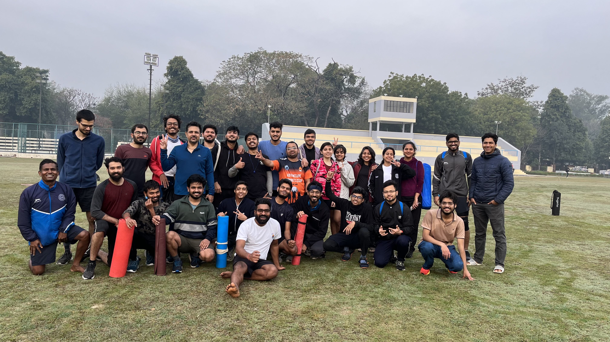
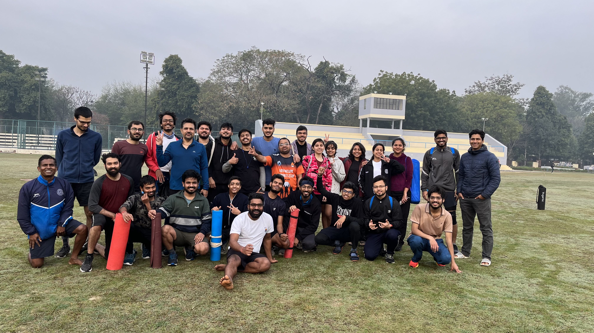
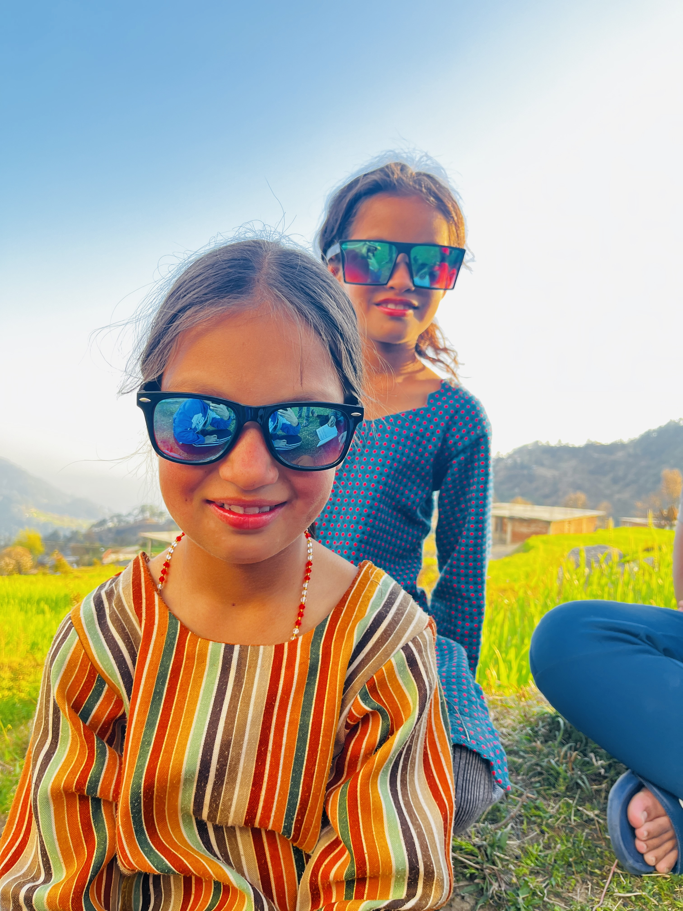
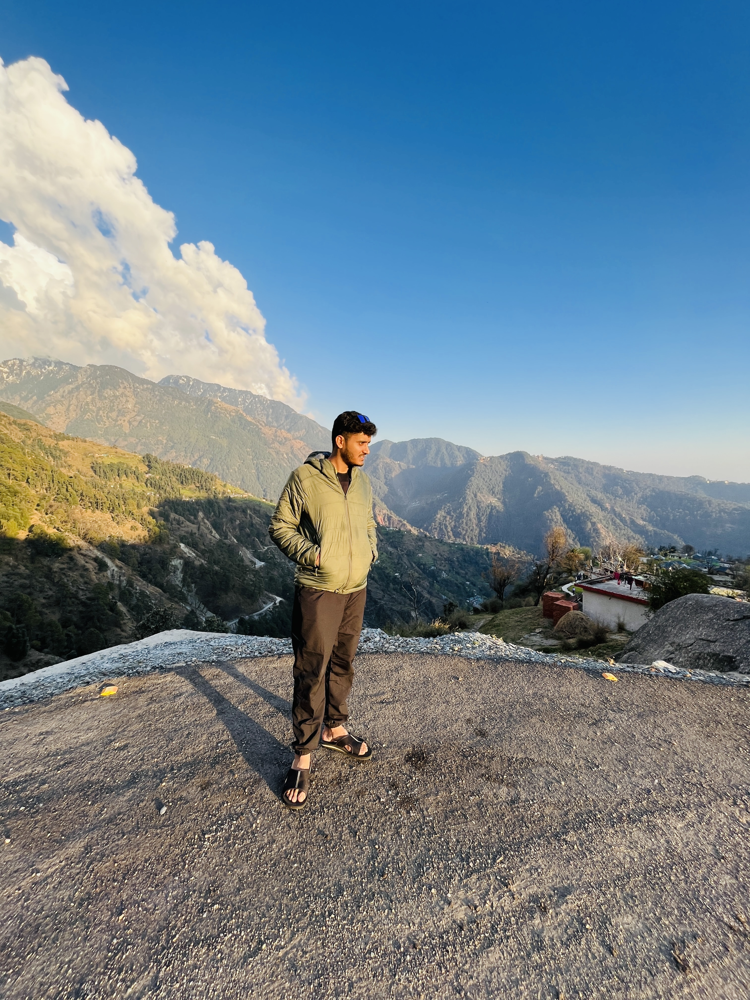
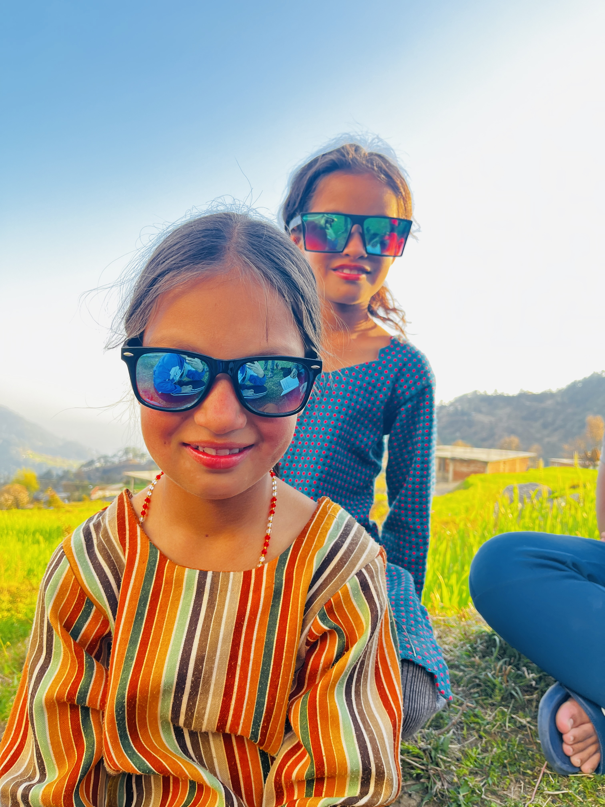
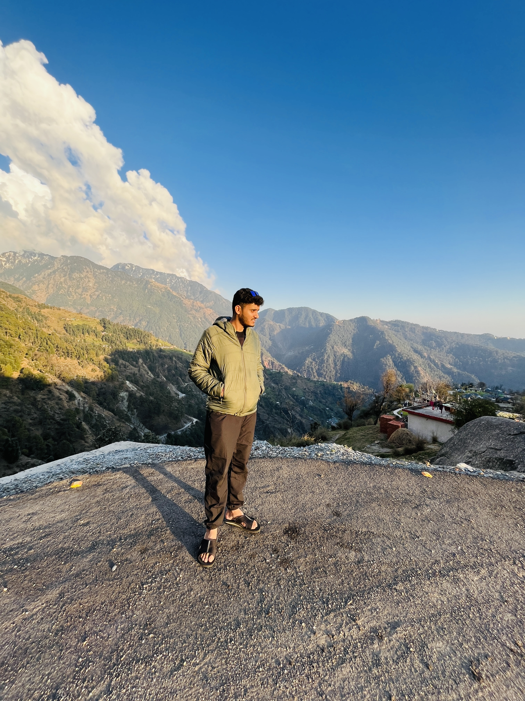

My Epic Journey to Minkiani Pass(HP) with Adventure Club IITK
March, 2023
It all started Before our college placement session, my friends and I were discussing our dreams of exploring mountains and staying fit(usual young nigaa dream). We came up with an exciting plan to join the Adventure Club for an upcoming adventure. Though not many friends agreed to join at first, we formed a courageous group and embarked on a life-changing journey. Let's join me to see the whole story ...
Pretrip Prepration
We had to go through tough conditioning before going on the trek, which included daily running (at 5 a.m. during the winter), various physical activities, and most importantly, they keep track of attendance, and you have to pass some criteria (I was on the border, and sometimes we went straight to conditioning after nightout to meet the attendance criteria). However, after conditioning, it seems like the day is a success and the entire day is full of satisfaction. After 40 days of such conditioning, I felt like I had accomplished something significant, and it instilled confidence in me with excellent physical. Finally, 15 people were ready to embark on a journey with all necessary belongings (the trekking bag weighed around 15 kg). Here are some training photos...
 

Real Journey Begins!
It was now the day when we embarked on our adventure, and we were all prepared. We rode the train from
Kanpur to Delhi, then changed trains in Delhi to Pathankot. From there, we took a bus to Dharamshala
(bus driver was a heavy driver 😶🌫️, and driving on such a tiny road at such a high altitude was
terrifying) and then a cab to McLeodganj, which was a really beautiful location. We slept in a hotel for
one night and explored everything of the culture, food, and did a brief hike by ourselves. My buddy shot
one pretty excellent photo of me, and I tried very hard to take a decent photo of him and successfully
failed (LoL).

We met our trek leaders (really pleasant people) at Maclodganj and they talked us through the day's
itinerary. We then began our journey to Kareri Village (a very difficult hike) and spent the night there. I
had no idea a town could exist at such a high altitude. We met some local youngsters and formed strong bonds
with them while learning about village tradition (all villagers cut woods before a wedding for one family).
The villagers are quite powerful (older villagers easily bring bundles of grass from a height).
 



We started our trek to Kareri Lake from Kareri Village (there was no internet for 4-5 days) with all
things we needed for 4-5 days (leaving heavy goods at Kareri Village at our stay). As we climbed higher, the
temperature began to decrease and there was less oxygen (we were warned that frustration may be a side
consequence hehe). After about 10 kilometres, we arrived at a rest stop where we set up our tents and spent
the night. Trek leaders prepared delicious meals, and we all gathered together in the hills, lighting wood
fires and having a great time (dancing, singing, etc.). Water was flowing nearby, and the weather was
perfect (rainy and cool). Some team members became ill, but fortunately they recovered.
The next morning, everyone was eager to begin the walk to Keri Lake. Now that there was snow on the route,
we were advised to go with caution (since snow is sleepy). After a lot of effort and joy, we arrived at
Kareri Lake, where there was snow all around (it seemed like we were standing in white heaven). We pitched
our tents on a thick covering of snow (yes, we stayed on snow). After erecting the tents, we went sliding,
took photographs, and had a lot of fun.We all sat around the fire and ate food prepared by the hike guides
while listening to entertaining lectures, storeis and making fun. The night was incredibly chilly, and it
was difficult to sleep at such low temperatures (we clung to one other to remain warm 😶🌫️).

The next morning, two of our companions were ill and stayed on Kareri Lake with guides and others (at 4
a.m.) we began our trek to Minkiani Pass (the most difficult route) with torches in hand. The path was
steep, and owing to a shortage of air, our breathing became rapid, but we eventually made it to the summit
till 9 a.m. At the top, it seemed like I was in a refuge, and I began to feel like I had accomplished
something really important in my life after so much suffering. We all had a good time and took a lot of
pictures.
We were all instructed to join each other by rope after having some break, and we all took
fascinating slides from top to lake, which was a lot of fun. That night was bitterly cold, with our tents
covered in snow, and it was the most difficult night I'd ever had (after that night, I began to dislike
hills because of the cold). From Kareri Village, we took the same route and stayed at the same places till
we arrived at Mcleodganj, where we spent one day having fun, travelling, and shopping. From there, we began
our journey to IITK, following the same stations till we arrived at the IITK campus.
Things I Learned
When I reflect on this adventure, I realize that I am capable of undertaking difficult things, and this hike provided me confidence after reaching heights that I would not have got otherwise.The most valuable gift I received from was some new friends (lit). Another thing I learnt was teamwork (supporting each other on the walk was essential, and we did it), extrovert ness, other cultures, and management. I became acquainted with the lovely world of nature. I'm glad I accomplished such a beautiful hike.
If you are planning a hike, I have some suggestions for you: do Conditioning propely, familiarize
yourself with steep walking, bring all necessary items with you (sometimes you think something isn't
necessary, but it is) and be cautious while doing trek (it's best if you do trek with a group of
people), eat healthy on trek, and take proper guide about the area to which you are going for trek.
***I suggest U should do atleat one trek***


{kind=link}
{kind=link}
{kind=link}
{kind=link}
{kind=link}